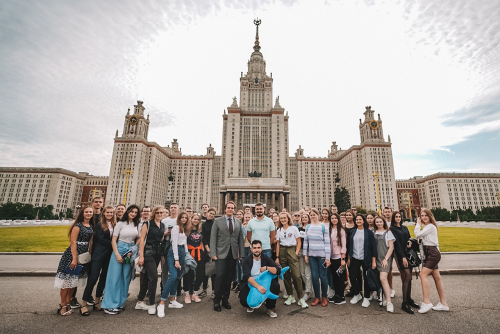

Евгений Мизарев , В 2014 году закончил юрфак МГУ.Занимаюсь подготовкой к ВПР,ОГЭ,ЕГЭ с 2012 года.Максимальный балл ЕГЭ:обществознание-100, история-100.
Один из сильнейших репетиторов по обществознанию и истории в Тверской области.Возможны дистанционнные занятия.
Я верю, что понимание исторических событий и социальных процессов не только помогает развить критическое мышление, но и позволяет лучше понять современный мир.
Образование:
в 2014 г. закончил юридический факультет МГУ, Проходил практику в лицеи при МГУ

Места,
где можно заниматься офлайн